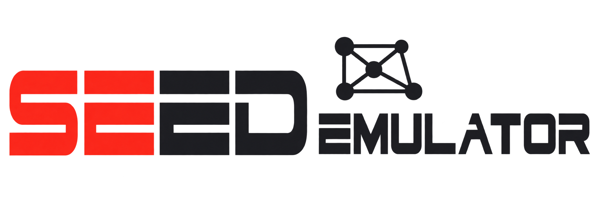
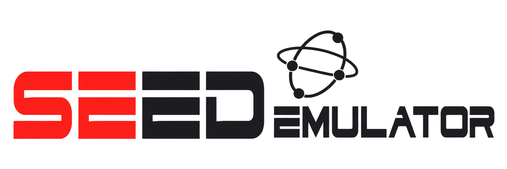
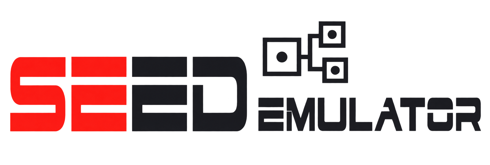

SEED Emulator · Logo 设计方向
延续原 SEED 品牌字形，重新设计右侧文字与符号
推荐
01 · 互联节点
突出网络与互联
兼顾三个项目

02 · 轨道网络
突出连接与探索
轻盈、科技感

03 · 模块互联
呼应原三齿轮结构
突出可组合仿真

延续原 SEED 品牌字形，重新设计右侧文字与符号
突出网络与互联
兼顾三个项目

突出连接与探索
轻盈、科技感

呼应原三齿轮结构
突出可组合仿真
